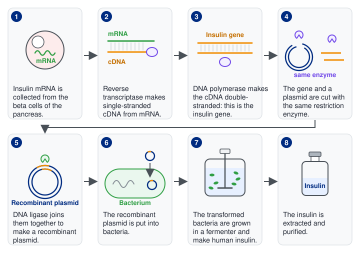
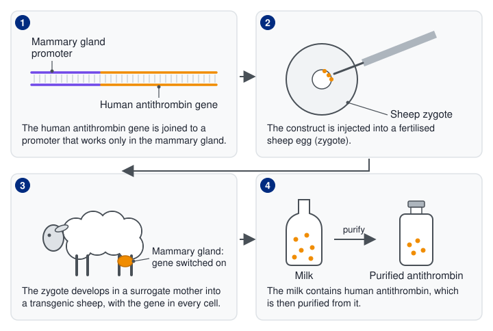
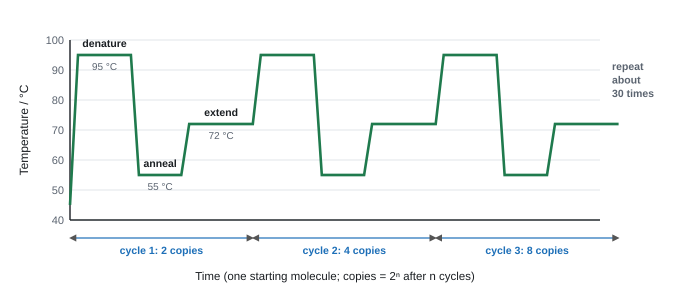
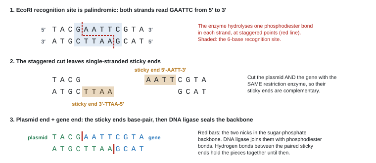
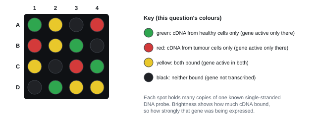
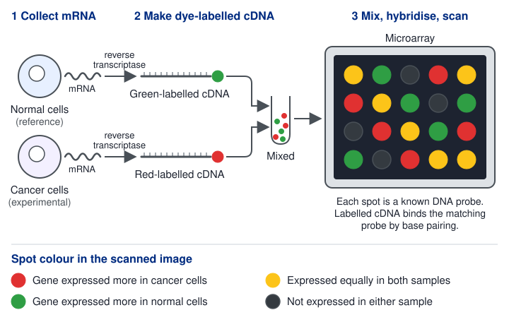

Gene technology
Gene technology cuts out a gene, joins it to a carrier molecule and places it in a new cell, so the cell makes a protein it could not make before. This page covers making drugs with genetically modified organisms, making and copying recombinant DNA, getting it into cells, microarrays, bioinformatics, and the risks and benefits of GMOs.
Spec8.17Making drugs with genetically modified organisms
Know how drugs can be produced using genetically modified microorganisms, plants and animals.
- Genetic modification: changing an organism's DNA, usually by adding a gene from another species. The result is a genetically modified organism (GMO), also called transgenic.
- It works because the genetic code is universal: a human gene is transcribed and translated into the same protein in a bacterium.
- The overall plan: isolate the gene → put it into a vector → get the vector into the host cells → select the modified cells → grow them → extract and purify the product.
Microorganisms (bacteria and yeast)
Example: human insulin made by E. coli or yeast. Others: human growth hormone, clotting factors, vaccine antigens.
- Get the gene. For insulin, extract mRNA from pancreatic β-cells (which make lots of it) and use reverse transcriptase to make cDNA (8.18).
- Cut a plasmid with a restriction endonuclease and insert the gene using DNA ligase. The plasmid also carries a promoter and a marker gene.
- Get the plasmids into the bacteria (e.g. heat shock, 8.19) and select the ones that took up the recombinant plasmid.
- Grow them on a large scale in a fermenter, with sterile conditions and the best temperature, pH, oxygen and nutrients.
- Extract and purify the insulin (downstream processing).
- Insulin is two polypeptide chains, so two genes are needed (in one method each chain is made by different bacteria and the chains are joined afterwards).
- Why cDNA: bacteria can't remove introns, and cDNA made from mature mRNA has none.
- Limitation: bacteria have no ER or Golgi apparatus, so they can't add sugar groups (glycosylation) or fold some human proteins properly.

Plants
Examples: vaccine antigens in edible plants, antibodies in rice, tomatoes that make L-DOPA.
- The gene is put into the Ti plasmid of the bacterium Agrobacterium tumefaciens, which infects plant cells and inserts the gene into their DNA. Or DNA-coated gold particles are fired into plant cells with a gene gun.
- Modified cells are grown into whole plants by tissue culture. The drug is extracted from the leaves or fruit, or (for edible vaccines) the plant part is eaten.
Animals ("pharming")
Examples: antithrombin (an anti-clotting protein) in goats' milk; human α-1-antitrypsin in sheep's milk.
- The human gene is joined to the promoter of a milk-protein gene, so it is only switched on in the mammary gland.
- The DNA is microinjected into the nucleus of a fertilised egg (zygote), and the embryo is implanted into a surrogate mother.
- Offspring are tested for the gene. Females that have it make the protein in their milk, from which it is extracted and purified. They are then bred to make more transgenic animals.

| Host | How the gene gets in | Advantages | Disadvantages |
|---|---|---|---|
| Bacteria | plasmid + heat shock or electroporation | grow fast and cheaply in fermenters; large amounts; easy to purify | no introns removed (so cDNA needed); no glycosylation or correct folding of some proteins |
| Yeast | plasmid | eukaryotic, so some protein modification; grows in fermenters | still can't make some human proteins correctly |
| Plants | Ti plasmid of Agrobacterium, gene gun | cheap to grow on a large scale; no animal pathogens; edible vaccines need no fridge | yield varies; risk of gene spreading in pollen |
| Animals | microinjection into a zygote | proteins modified correctly (glycosylated, folded) like human ones; collected from milk without harming the animal | expensive; slow; low success rate; animal welfare concerns |
- The frame (4 of 5–6), always in context, naming the gene, host and product: "identify / isolate the (human) gene for X" (or "extract mRNA and use reverse transcriptase to make cDNA"); "cut with a restriction endonuclease"; "insert into a vector (plasmid / virus)"; "vector put into the host cell by a named method"; "select / grow the modified cells (in a fermenter) and extract / purify X".
- Animals: the gene goes into "udder / mammary cells" or a "fertilised egg / zygote / embryo"; the product comes from the milk (WBI15 Oct 2022).
- Eukaryotic host advantage: "has ER and Golgi", so the protein is "(properly) glycosylated / modified" (WBI15 Jan 2021).
- GM insulin compared with animal insulin: "not limited by animal slaughter", "large quantities", "no ethical / religious objection", "less immune response / rejection" (identical to human insulin), "no risk of infection from animals" (WBI15 Jan 2025).
Often asked as: "Describe how [organism] could be genetically modified to make [product]" (about four marks, in nearly every paper); advantages of a host; yield data from GM strains.
- A generic GM answer that never names the gene, host or product. Examiners repeatedly cap these, and re-using an old mark scheme out of context doesn't work.
- Missing the first mark: say which gene ("the human growth hormone gene") and that it's isolated.
- Saying the gene comes from the sheep or the tomato. It comes from the donor (usually human). And it goes into a zygote or mammary cells, not "into the sheep".
- "The insulin gene" when the question involves both chains: two polypeptides need two genes.
- GloFish-style zebrafish: a coral fluorescence gene put into zebrafish embryos; glowing fish selected under UV light and then bred (WBI15 Jun 2024 article).
- Mouse cells compared with E. coli for making human growth hormone: more like human cells, but slower, costlier and lower yield (WBI15 Jun 2025).
- A recombinant protein drug can itself trigger an immune response: antigen presented to T helper cells, which activate B cells to make antibodies (WBI15 Oct 2022).
Spec8.18Making recombinant DNA
Understand how recombinant DNA is made, including the roles of restriction endonucleases and DNA ligase.
Recombinant DNA is DNA made by joining DNA from two different sources, e.g. a human gene inside a bacterial plasmid.
1. Getting the gene
- Cut it out of the donor's DNA with restriction endonucleases. You need to know where it is, and a human gene cut out this way still contains introns.
- Make it from mRNA (the usual route for human proteins made by bacteria): take mRNA from cells that express the gene (e.g. pancreatic β-cells for insulin, where there is lots of it), use reverse transcriptase to make a single complementary DNA strand (cDNA), then DNA polymerase to make the second strand. The cDNA has no introns.
- Make it artificially, nucleotide by nucleotide, if the base sequence (or the protein's amino acid sequence) is known.
2. Copying it: PCR

The reaction tube holds the DNA, two primers (short single-stranded DNA pieces complementary to the ends of the target section, one for each strand), free DNA nucleotides, Taq polymerase and a buffer. A thermal cycler then repeats:
- Denaturation, about 95 °C: the hydrogen bonds between bases break and the two strands separate.
- Annealing, about 55 °C (50–65 °C): the primers bind to the ends of the target on each single strand by complementary base pairing.
- Extension, about 72 °C: Taq polymerase adds nucleotides to the primer, building a complementary strand (joining them with phosphodiester bonds).
- Taq polymerase comes from Thermus aquaticus, a bacterium from hot springs. It isn't denatured at 95 °C, so it doesn't need replacing each cycle, and 72 °C is its optimum.
- Each cycle takes a few minutes and doubles the amount of target DNA.
Worked example: PCR copy number
Each cycle doubles the number of DNA molecules: copies = starting number × 2ⁿ, where n = number of cycles.
One molecule after 30 cycles: 2³⁰ = 1 073 741 824 ≈ 1.07 × 10⁹ copies.
200 molecules after 20 cycles: 200 × 2²⁰ = 200 × 1 048 576 = 2.10 × 10⁸ copies.
Cycles needed for at least 10⁶ copies from one molecule: 2¹⁹ = 524 288 (too few), 2²⁰ = 1 048 576, so 20 cycles. At 3 minutes per cycle that's 60 minutes.
3. Cutting: restriction endonucleases
- These enzymes come from bacteria, which use them to chop up the DNA of invading viruses.
- Each one recognises a specific short base sequence, its recognition site (usually 4–8 base pairs), and hydrolyses the phosphodiester bonds in the sugar-phosphate backbone of both strands there. Its active site is complementary only to that sequence.
- Recognition sites are palindromic: the sequence reads the same on both strands when each is read 5′ → 3′. For EcoRI, one strand reads 5′-GAATTC-3′ and so does the other (read in its own 5′ → 3′ direction). Because the site is symmetrical, the enzyme cuts both strands at the same point within it.
- Many restriction enzymes cut the two strands at staggered points, leaving short single-stranded overhangs: sticky ends (EcoRI cuts G^AATTC, leaving AATT overhangs). Others cut straight across, leaving blunt ends (e.g. CCC^GGG).
- Any two pieces of DNA cut with the same enzyme have complementary sticky ends, which can base-pair with each other.

4. Joining: DNA ligase
- Cut the plasmid (the vector) with the same restriction enzyme, so it has sticky ends complementary to the gene's.
- Mix the gene with the opened plasmids. The sticky ends anneal: hydrogen bonds form between complementary bases.
- DNA ligase joins the sugar-phosphate backbones by forming phosphodiester bonds (condensation reactions). The result is a recombinant plasmid.
- The plasmid also needs a promoter (so the gene is transcribed in the host) and usually a marker gene (8.19).
- Some plasmids close up again without the gene, so the cells that took up a recombinant plasmid must be picked out (8.19).
Cut the gene out of the source DNA with a restriction enzyme, leaving sticky ends.
The enzyme gives a defined cut, so the gene has known ends.
Cut the plasmid open with the same restriction enzyme.
The plasmid's sticky ends then match the gene's sticky ends.
Mix the gene and the plasmid so that complementary sticky ends pair through hydrogen bonds.
Add DNA ligase to form phosphodiester bonds and seal the backbone.
Without ligase, the join would fall apart because hydrogen bonds are weak.
| Enzyme | Job |
|---|---|
| Restriction endonuclease | cuts DNA at a specific recognition site (hydrolyses phosphodiester bonds) |
| DNA ligase | joins DNA fragments (forms phosphodiester bonds) |
| Reverse transcriptase | makes cDNA using mRNA as the template |
| DNA polymerase (Taq in PCR) | builds a new DNA strand on a template |
Gel electrophoresis (separating DNA fragments)
Gel electrophoresis separates DNA fragments by size. The DNA is loaded into wells in an agarose gel and an electric current is applied. DNA has a negatively charged phosphate backbone, so the fragments move towards the positive electrode. The gel acts like a sieve: small fragments pass through the gel pores quickly, and large fragments are slowed down. After a set time the fragments have spread into bands, with the smallest furthest from the wells. Comparing the bands with a size marker allows the sizes of the fragments to be estimated, and the bands can be stained to make them visible.
Worked example: cutting a sequence
An enzyme recognises 5′-AAGCTT-3′ and cuts between the two A's (A^AGCTT).
Is the site palindromic? The other strand reads 3′-TTCGAA-5′, which is AAGCTT when read 5′ → 3′. Yes.
The sticky end left is a four-base overhang, 5′-AGCT.
A linear DNA molecule with 3 of these sites is cut into 4 fragments; a circular plasmid with 3 sites gives 3 fragments.
- "cut the gene / DNA using a restriction endonuclease" ("restriction enzyme" is fine; "restricting enzyme" is ignored).
- "cut the plasmid with the same restriction enzyme" → "complementary sticky ends".
- "sticky ends joined using DNA ligase" / "forms phosphodiester bonds". Ligase was required in some sessions and not in others, so always include it.
- The mRNA route: "extract mRNA" → "reverse transcriptase" → "cDNA".
- PCR, using any temperatures given: "about 95 °C breaks hydrogen bonds / separates the strands"; "cooled (about 55 °C) so primers bind"; "about 72 °C, Taq polymerase joins nucleotides"; "repeated cycles".
- MCQs: the enzyme that cuts DNA is a restriction endonuclease; the bond joining nucleotides is a phosphodiester bond (WBI15 Oct 2023).
Often asked as: inside the "describe how an organism could be modified" questions (8.17); MCQs on enzymes and bonds; CRISPR and viral vectors in article questions.
- "Restriction enzymes join the fragments." They cut; ligase joins.
- Not saying that the same enzyme cuts both the gene and the plasmid.
- "The recombinant DNA forms inside the host." It's made in a test tube; the host only takes it up.
- PCR: leaving out the temperatures; confusing primers with probes; saying Taq polymerase makes RNA.
- CRISPR-Cas9: a guide RNA complementary to a target gene leads the Cas9 endonuclease to that site, where it cuts the DNA, so the gene can be deleted or edited (WBI15 Jun 2025).
- An adenovirus as a vector for a working gene (AAT deficiency): the same restriction enzyme and ligase put the gene into the viral DNA; the virus enters the host cell and a functional protein is made (WBI15 Jan 2022).
Spec8.19Getting recombinant DNA into cells
Understand how recombinant DNA can be inserted into other cells.
The DNA has to get across the cell surface membrane (and, in eukaryotes, into the nucleus), then be kept and expressed. It is carried by a vector or pushed in physically.
| Method | How it works | Used for |
|---|---|---|
| Plasmid + heat shock | bacteria are chilled in calcium chloride solution (Ca²⁺ ions reduce the repulsion between negatively charged DNA and the phospholipid heads), then warmed briefly to about 42 °C; the membrane becomes more permeable and plasmids enter | bacteria |
| Electroporation | a brief high-voltage pulse opens temporary pores in the membrane | bacteria, plant and animal cells |
| Viral vector | the gene is put into a harmless (disabled) virus, which infects the host cell and injects its DNA; some viruses insert it into the host's chromosomes | animal and human cells; gene therapy (e.g. adenovirus) |
| Liposome | the DNA is wrapped in a phospholipid sphere, which fuses with the cell surface membrane (or is taken in by endocytosis) | gene therapy (e.g. lung cells in cystic fibrosis) |
| Agrobacterium tumefaciens | this soil bacterium naturally inserts part of its Ti plasmid into plant DNA; the gene is put into the Ti plasmid first | plants |
| Gene gun | tiny gold or tungsten pellets coated with DNA are fired into the cells | plants, especially cereals |
| Microinjection | DNA is injected through a very fine glass pipette into the nucleus of a fertilised egg | animals (pharming, transgenic animals) |
Finding the cells that took up the gene
Only a small fraction of cells take up a plasmid, and some plasmids don't contain the gene. Marker genes let you find the right ones:
- Antibiotic resistance: the plasmid carries a gene for resistance to antibiotic A. Grow the bacteria on agar containing A: only those with a plasmid survive.
- Insertional inactivation and replica plating: the plasmid carries resistance genes for two antibiotics, A and B, and the new gene is inserted inside gene B, which stops it working.
- Grow the bacteria on agar with antibiotic A (the master plate): only bacteria with a plasmid grow.
- Press sterile velvet onto the master plate and then onto a plate with antibiotic B (the replica), so each colony is copied in the same position.
- Bacteria with the recombinant plasmid don't grow on B, because gene B has been disrupted.
- Colonies present on the master plate but missing from the replica are the ones you want. Pick them from the master plate.
- Fluorescent markers: a gene for a fluorescent protein (e.g. GFP) makes modified cells glow under UV light. No antibiotic resistance genes are needed, which is safer.
Worked example: reading replica plates
A plasmid has genes for resistance to ampicillin and to tetracycline. The insulin gene was inserted into the tetracycline resistance gene. Bacteria were grown on ampicillin, then replica-plated onto tetracycline.
Colony P grows on both plates; colony Q grows on ampicillin but not on tetracycline.
P took up a plasmid without the insulin gene (its tetracycline gene still works). Q took up the recombinant plasmid (its tetracycline gene is disrupted by the insert). Pick Q from the master plate. Bacteria with no plasmid at all don't grow on either plate.
- Named vectors: "plasmid", "virus (adenovirus)", "liposome". Named methods: "heat shock", "electroporation", "gene gun", "micro-injection", "Agrobacterium tumefaciens". The vector must be described as entering the host cell.
- Bacteria: "plasmid taken up by the E. coli"; "bacteria given heat shock" (WBI15 Oct 2023, Jan 2024). "Gene gun" for bacteria and "vector" on its own are ignored.
- Animals: into "udder / mammary cells" or a "fertilised egg / zygote / embryo"; fish: into embryos or zygotes.
Often asked as: a mark point inside the "describe how" GM questions (8.17); how to find the bacteria that took up the gene.
- "Put the gene into the bacteria" with no vector or method. Name the method.
- Putting the gene into the wrong cells: the whole sheep rather than a zygote; a gene gun for bacteria.
- Thinking the inserted DNA always lands in the right place in a chromosome. Where it inserts is random, which is one reason screening is needed.
- Gene therapy for inherited blindness (the RPE65 gene), with a dose–response comparison using error bars (WBI15 Jan 2021).
- Antibiotic-resistance marker genes could spread to other bacteria, which is why fluorescent markers are a safer choice.
Spec8.20Microarrays: finding which genes are active
Know how microarrays can be used to identify active genes.
- An active gene is one that is being transcribed, so its mRNA is present. Different cell types, and the same cells at different times or in disease, express different genes.
- A microarray (DNA chip) is a small glass slide with thousands of microscopic spots in a grid. Each spot holds many copies of one known single-stranded DNA probe, complementary to part of one gene.
Method: comparing two samples
- Extract mRNA from both samples (e.g. healthy and tumour cells; treated and untreated cells).
- Use reverse transcriptase to make cDNA from each mRNA sample (cDNA is more stable than mRNA).
- Label each cDNA sample with a different fluorescent dye (e.g. healthy green, tumour red).
- Mix the samples and wash them over the microarray. Each cDNA hybridises (complementary base pairing) with the probe for its gene.
- Wash off any cDNA that hasn't bound.
- Scan the slide with a laser. A computer records the colour and brightness of every spot.


Worked example: reading a microarray
Using the grid above (green = healthy cells only, red = tumour cells only, yellow = both, black = neither):
- Active only in the tumour: A4, B1, C3. These may be driving the cancer, so they're possible drug targets.
- Switched off in the tumour (active only in healthy cells): A1, B3, C4, D2.
- Active in both: A2, B2, C1, D3, D4. Active in neither: A3, B4, C2, D1.
Always use the key in the question: the colour for each sample changes from paper to paper.
Uses and limitations
- Uses: comparing healthy and diseased tissue (e.g. telling cancer types apart and choosing treatment); finding the genes a drug, hormone or toxin switches on; finding genes linked to a disease by testing many people; finding out whether a pathogen's genes are active in host tissue.
- Limitations:
- it measures mRNA, not the amount of protein made;
- it gives relative, not absolute, amounts;
- it only detects genes that have a probe on the chip;
- it produces huge amounts of data, which need bioinformatics (8.21).
- "extract mRNA (from the cells / named tissue)"; "use a microarray / DNA probes"; "fluorescent dyes / tags / labels" (not just "fluorescence"); "compare stimulated and unstimulated / healthy and diseased"; "use bioinformatics / computer algorithms to analyse the data" (WBI15 Oct 2022 article).
- Short form: "use a microarray" "to detect mRNA", with cDNA or fluorescent labels (WBI15 Jan 2024).
- Active gene = "mRNA present / gene being transcribed".
- A separate route (don't mix it with the microarray one): mRNA → reverse transcriptase → cDNA → PCR → gel electrophoresis → compare bands.
Often asked as: "Suggest how scientists could find out which genes are active in…" (about ten papers, 2–4 marks, often in the article question).
- Knowing the words "microarray" and "bioinformatics" but giving no detail. Mention mRNA, reverse transcriptase / cDNA, fluorescent tags, hybridisation and the comparison.
- Not saying which tissue the mRNA comes from (e.g. the infected brain tissue).
- Mixing steps from two different routes. Each route is marked separately.
- Sequencing the genomes of individuals with and without a trait and comparing them is credited as another way to find the genes involved (WBI15 Oct 2024, Oct 2025 articles).
Spec8.21Bioinformatics
Understand what is meant by bioinformatics.
- Bioinformatics is the development and use of computer software, databases and statistical methods (algorithms) to store, organise and analyse large amounts of biological data, such as DNA and protein sequences and microarray results.
- It's needed because sequencing and microarrays produce far more data than anyone could analyse by hand: a human genome is about 3 × 10⁹ base pairs.
- Sequence databases are shared online, so scientists anywhere can compare their data with everyone else's.
- Uses:
- finding genes in a newly sequenced genome and predicting the protein (and its shape) each codes for;
- comparing sequences between species to work out how closely related they are;
- analysing microarray data to find the genes switched on in a disease, and possible drug targets;
- comparing the genomes of people with and without a disease (genetic risk, personalised medicine);
- tracking new variants of pathogens.
- Limits: the results are only as good as the data put in; huge storage needs; privacy of personal genetic information.
Worked example: comparing sequences
The same 20-base stretch of a gene is compared in three species:
A: ATGGCTTACGATCCGTAAGC
B: ATGGCTTACGTTCCGTAAGC (1 base different from A)
C: ATGCCTAACGTTCAGTATGC (5 bases different from A)
Similarity A–B = 19 ÷ 20 × 100 = 95%; A–C = 15 ÷ 20 × 100 = 75%.
A and B are more closely related: they share a more recent common ancestor. Bioinformatics software does the same thing for millions of bases at once.
- "use of bioinformatics / computers / databases / algorithms to analyse the data"; "reference to the use of a computer database" is accepted.
- Showing a gene came from a plant (whitefly): "determine the DNA base sequence", "use bioinformatics to compare it with plant genomes", "the sequence is found only in plants and not in other whitefly" (WBI15 Jun 2024). Finish with that conclusion.
- Homology between species: "sequence the genes", "compare the sequences for similarity", "the products have similar amino acid sequences / functions".
Often asked as: one mark point inside microarray and genome-comparison questions; never asked as a stand-alone definition in 2020–2026.
- "Bioinformatics finds the gene." Say what is compared with what (sequences, gene activity) and what result would answer the question.
- Gel band patterns that "are similar". They must be the same (match).
- Comparing human and zebrafish genes to justify using zebrafish as a model for human toxicity (WBI15 Jan 2022 article).
Spec8.22Risks and benefits of GMOs
Understand the risks and benefits of using genetically modified organisms.
| Area | Benefits | Risks |
|---|---|---|
| Crops | higher yields; pest resistance (Bt crops make a protein toxic to insect larvae, so less insecticide is sprayed); herbicide tolerance (the crop survives a herbicide such as glyphosate, so weeds can be killed without harming it); drought, salt and disease resistance; better nutrition (Golden Rice makes β-carotene, which the body turns into vitamin A); longer shelf life; more food from the same land | gene flow: pollen carries the gene to wild relatives, producing superweeds; pests evolve resistance to the Bt toxin (superpests); monocultures reduce biodiversity; harm to insects that aren't pests; unknown long-term effects of eating GM food (e.g. allergy to a new protein) |
| Medicine | human proteins (insulin, growth hormone) identical to our own, so fewer immune reactions than animal versions; cheap, plentiful and pure; no infection risk from animal or human sources; plant vaccines need no refrigeration; gene therapy | viral vectors can trigger immune responses or insert in the wrong place in the genome; antibiotic-resistance marker genes could pass to harmful bacteria (horizontal gene transfer) |
| Animals | drugs collected in milk; faster-growing or disease-resistant animals; animal models for research | animal welfare; escaped GM animals could outcompete or breed with wild populations |
| Society and economics | cheaper food; less pesticide spraying and cost; food security | seed patented by large companies; farmers may have to buy new seed every year, so poorer farmers lose out; moral or religious objections; consumer choice and labelling |
Reducing the risks
- Grow GM crops in secure greenhouses, or with buffer zones of non-GM plants round them; keep GM and non-GM fields apart.
- Make GM plants sterile so their pollen can't spread the gene.
- Use fluorescent markers rather than antibiotic-resistance genes.
- Test thoroughly before release; regulate and label GM food.
For a six-mark "discuss" or "assess" question: use the data you're given (quote figures), give both benefits and risks with a reason for each, and finish with a judgement if the command word is "assess". The top level needs both sides in detail. "It's cheaper" or "it's unethical" needs a reason.
- Risks (3 of 4): "accumulation of engineered material in the environment / other species"; "cross-breeding with wild species / pollen transfer"; "unknown long-term effects of eating GMOs"; "superweeds / superpests"; a named health effect such as allergy. Reducing a risk: "grow in secure greenhouses", "separate GM and non-GM crops". Reduce the risk you named; don't bring in a new one (WBI15 Oct 2021).
- GM crops: benefits are yield, less pest damage, less herbicide and pesticide use, better nutrition and food supply; risks are monoculture, reduced biodiversity, horizontal gene transfer (antibiotic resistance), herbicide-resistant weeds and unknown long-term effects (WBI15 Oct 2022).
- Resistance evolving: "only the individuals with the gene / allele survive", "reproduce", "pass on the allele" (WBI15 Jun 2024).
Often asked as: six-mark "discuss / assess the risks and benefits" with a table and a graph (GM soybean and corn; a GM fungus in a warming world); risks and benefits of GM zebrafish; advantages and disadvantages of a GM drug source.
- Vague risks such as "it could be dangerous". Give the mechanism: pollen spreads the herbicide-resistance gene to a wild relative, which becomes a superweed.
- Discussing only the risks. Benefits are needed for the top level.
- Describing the data without linking it to a benefit or a risk.
- Horizontal gene transfer: a gene that passed from a plant into whitefly, letting the whitefly break down plant poisons (WBI15 Jun 2024 article).
- GM uptake data: GM soybean rose from 7% to 95%, and GM corn from 6% to 88%, of the US planted area between 1996 and 2017 (WBI15 Oct 2022).
Quick checks
What is the role of DNA ligase in making recombinant DNA?
DNA ligase joins the backbone of the gene to the plasmid, making phosphodiester bonds. Restriction enzymes do the cutting, reverse transcriptase makes cDNA and heat separates strands in PCR. Hydrogen bonds between sticky ends hold the pieces together only temporarily.
In a microarray experiment, what does a red spot show?
The experimental sample is labelled red, so a red spot means more of that mRNA was present in it. Yellow means equal expression, and green means the reference sample expressed the gene more. A spot with no colour would mean no expression.
Why is a mammary-specific promoter included in a construct used to make a transgenic animal?
The promoter controls where the gene is expressed. Placing the human gene behind a mammary-specific promoter means the protein is made in the milk, where it can be collected, and not in every tissue.
In gel electrophoresis, why do DNA fragments move towards the positive electrode?
The phosphate groups in the DNA backbone carry a negative charge, so the fragments are pulled towards the positive electrode. The gel then separates them by size, with the smallest fragments travelling furthest.